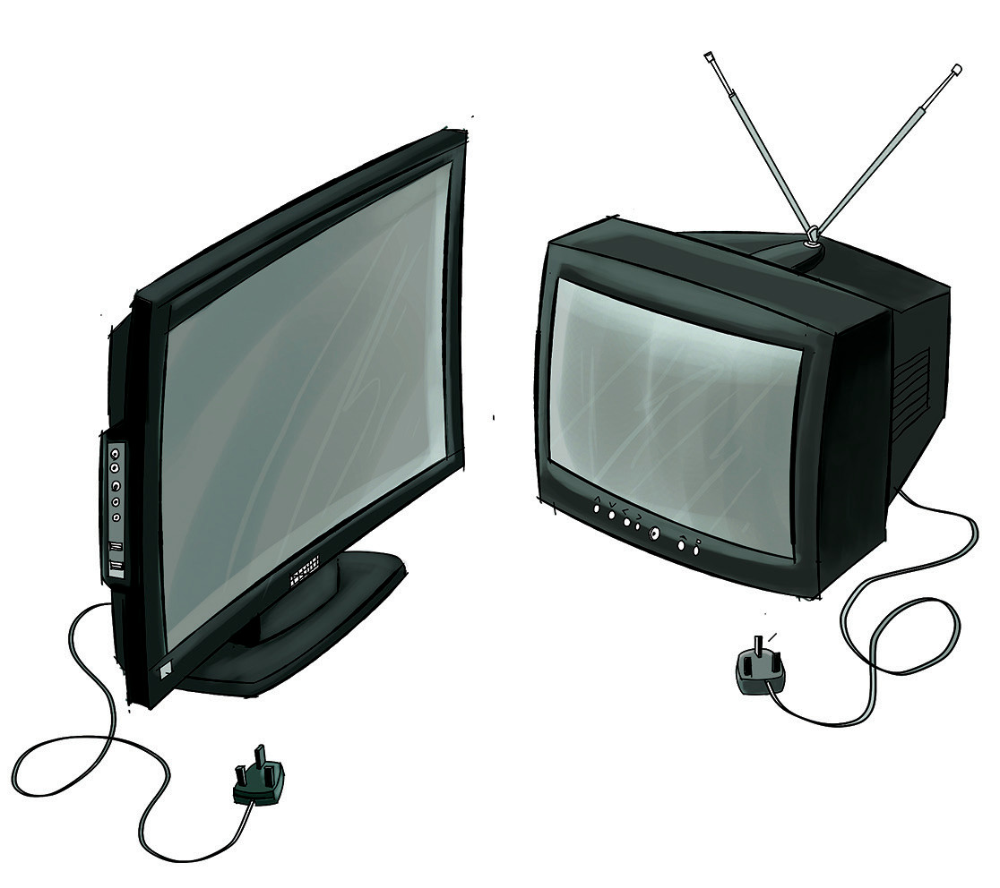

2. Kuzima redio na soketi ya umeme kama haitumiki.
3. Kama redio inatumia betri, ondoa betri kama haitatumika kwa muda mrefu. Betri zikikaa kwa muda mrefu zinaweza kuvuja na kusababisha kutu.
4. Funika redio kwa kitambaa chepesi ili kuzuia vumbi lisiingie.
Runinga
Runinga ni chombo kinachopokea mawimbi ya sumakuumeme na kuyabadilisha kupata picha na sauti. Runinga ina sehemu mbalimbali kama skrini, antena, spika, na vitufe mbalimbali. Muundo wake hubadilika kutokana na maendeleo ya sayansi na teknolojia. Zipo runinga zenye umbo bapa na zenye mchongoko kwa nyuma kama inavyoonekana katika Kielelezo namba 7.

Antena
Skrini
Vitufe
Plagi
Nyaya za umeme
Kielelezo namba 7: Aina za runinga